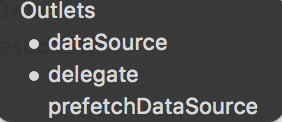

隐藏多余的cell分割线
tableView.tableFooterView = UIView() //隐藏多余的cell的分割线
tableView.tableHeaderView = headerView //设置tableView头部
tableView.theme_backgroundColor = "colors.tableViewBackgroundColor" //背景色
tableView.separatorStyle = .none //隐藏所有分割线
TableView常用代理
override func viewDidLoad() {
super.viewDidLoad()
//创建一个重用的单元格
self.tableView!.register(UINib(nibName:"MyTableViewCell", bundle:nil),forCellReuseIdentifier:"myCell")
}
//每一组的头部
override func tableView(_ tableView: UITableView, viewForHeaderInSection section: Int) -> UIView? {
if(section == 0){
print("自定义头部")
let headerView = Bundle.main.loadNibNamed("NewsGoodsView",owner: self, options: nil)?[0] as! UIView
//没有实现类的Xib内部组件需要通过tag来获取
// let titleLabel = headerView.viewWithTag(1) as! UILabel
// titleLabel.text = self.adHeaders?[section]
return headerView
}
return UIView()
}
//显示多少组
override func numberOfSections(in tableView: UITableView) -> Int {
return 1
}
//每一组头部的高度
override func tableView(_ tableView: UITableView, heightForHeaderInSection section: Int) -> CGFloat {
return 40
}
//每一组显示多少条数据
override func tableView(_ tableView: UITableView, numberOfRowsInSection section: Int) -> Int {
return 2;
}
//每一个Cell的高度
override func tableView(_ tableView: UITableView, heightForRowAt indexPath: IndexPath) -> CGFloat {
return 400
}
//填充每一个Cell的内容
override func tableView(_ tableView: UITableView, cellForRowAt indexPath: IndexPath) -> UITableViewCell {
let cell = tableView.dequeueReusableCell(withIdentifier: "myCell") as! MyTableViewCell //取出复用(注册过的)cell
return cell
//return UITableViewCell()
}
//回调事件
override func tableView(_ tableView: UITableView, didSelectRowAt indexPath: IndexPath) {
// tableView.cellForRow(at: indexPath)?.selectionStyle = .none cell为空白样式
print("当前点击了\(indexPath.row)")
}
func tableView(_ tableView: UITableView, willDisplayFooterView view: UIView, forSection section: Int) {
print("加载新数据")
}
func scrollViewDidEndDecelerating(_ scrollView: UIScrollView) {
print("停止滚动")
}
数据源代理
self.tableView.delegate = self
self.tableView.dataSource = self
等价于

tableViewCell中想拿到父tableView控件:使用拓展 1，扩展UITableViewCell
为方便使用，这里对 UITableViewCell进行扩展，添加个方法用来获取其所在的 tableView
//返回cell所在的UITableView
func superTableView() -> UITableView? {
for view in sequence(first: self.superview, next: { $0?.superview }) {
if let tableView = view as? UITableView {
return tableView
}
}
return nil
}
2.使用demo
//按钮点击事件响应
func tapped(_ button:UIButton){
let tableView = superTableView()
let indexPath = tableView?.indexPath(for: self)
print("indexPath：\(indexPath!)")
}
cell中获取当前的index
let tableView = superTableView()
let indexPath = tableView?.indexPath(for: self)
TableView滑动到底部
override func scrollViewDidScroll(_ scrollView: UIScrollView) {
let height = scrollView.frame.size.height
let contentYoffset = scrollView.contentOffset.y
let distanceFromBottom = scrollView.contentSize.height - contentYoffset
if distanceFromBottom < height {
print(" you reached end of the table")
}
}
底部和顶部
1.viewForHeaderInSection 随滚动条一起滚动,粘住
2.viewForFooterInSection 随滚动条一起滚动